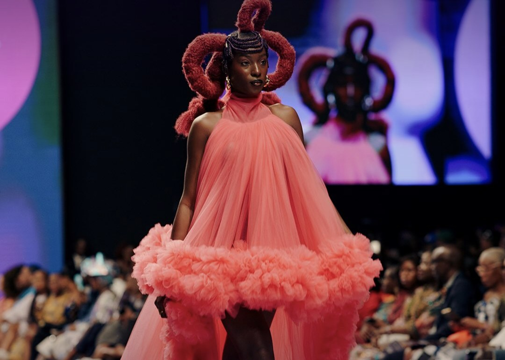
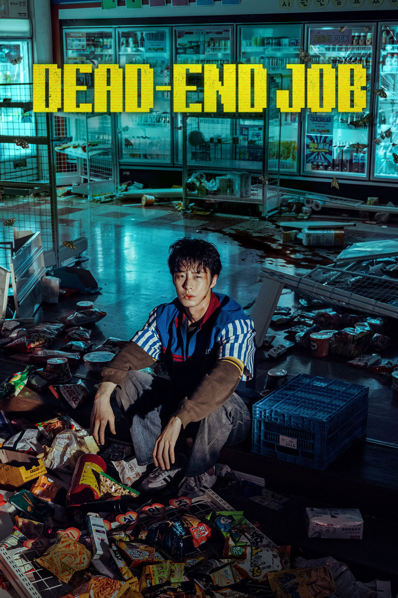
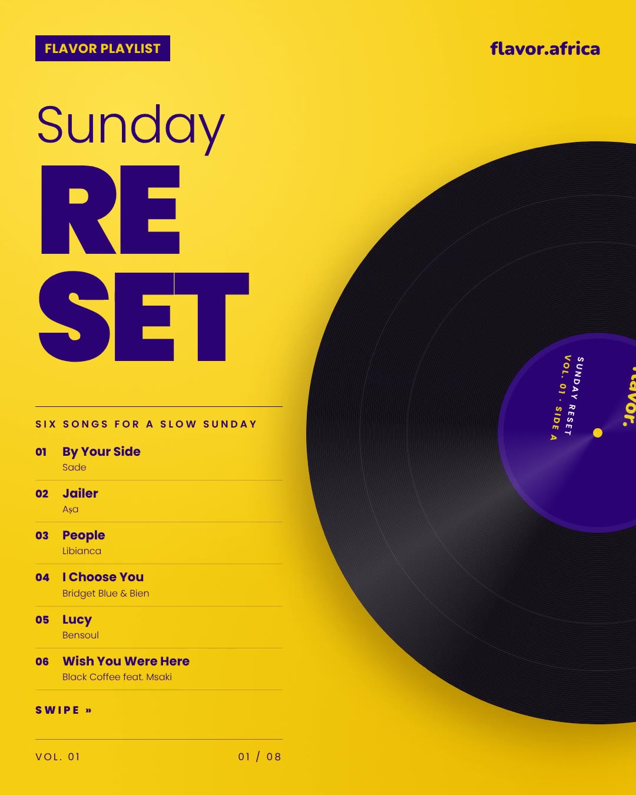
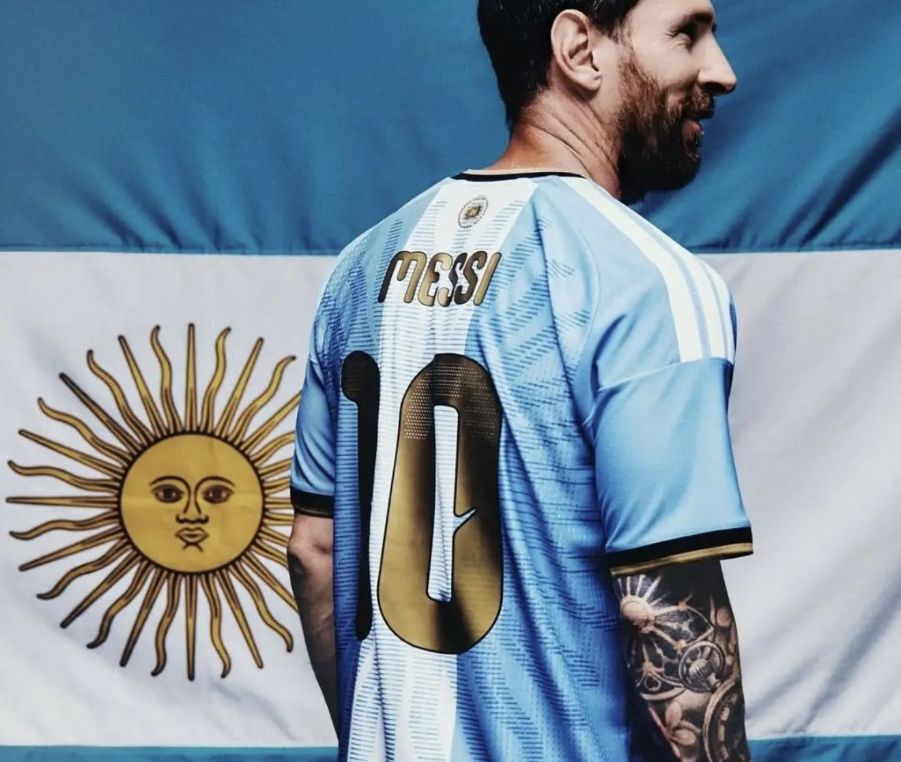
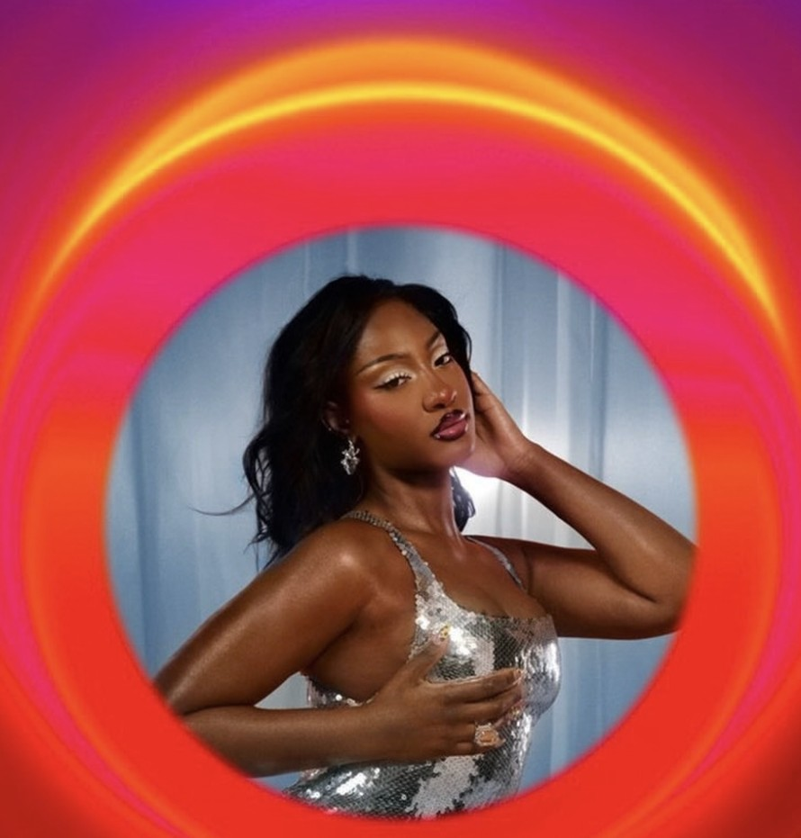

Know your November artist: Ayrosh
Mugithi, reimagined. Ayrosh headlines Flavor Artist Live on Saturday 28 November.

Mugithi, decoded

Made in Lagos at six
Did Bob Marley's locks come from Kenya?
Lagos Fashion Week makes space for fashion’s business side

Lupin Part 4: bigger, flashier, still worth it

tg.blk: the Mombasa bedroom producer opening doors for alternative music
Mr Eazi: singer, investor, owner

Savara: the rhythm before the spotlight
True Colors at 40: Cyndi Lauper's No. 1, four decades on

In Their Words: Lupita Nyong'o on beauty

Nairobi's New Sound

Lagos Fashion Week 2026: everything to know before the runway lights up
That chant on Thriller? It started in Cameroon
Mugithi, decoded
One voice, one guitar, and a whole room holding on. What mugithi is and where it came from.

Must watch this weekend: Call Me Queen, How to Ruin Diwali and more
A Nairobi story in cinemas, a Diwali disaster and two Netflix thrillers.
Made in Lagos at six
How Wizkid's fourth album rewrote Africa's chart records.
Did Bob Marley's locks come from Kenya?
Flavor Roots Issue 02: from Kingston to the Mau Mau forests, the real story behind the locks.
Lagos Fashion Week makes space for fashion’s business side
From fashion-business sessions to a retail presentation, Wednesday’s programme put the work around the clothes in view.
Nairobi this weekend: 30 October – 1 November
The Floodies final, a Halloween double at Village Market, a new Madd Madd World book and Rock Riot.
Sir Patrick Stewart dies at 86
The Star Trek and X-Men actor died at his home in Los Angeles on 28 October.
Lupin Part 4: bigger, flashier, still worth it
Critics love it, fans are split. Our call on Omar Sy's return.
From brief to beat: FAME Week pairs African music makers with storytellers
A songwriting camp links music creators with screen and content briefs, while raising questions about credit, licensing and fair pay.
tg.blk: the Mombasa bedroom producer opening doors for alternative music
The artist to watch from the coast.
Kane ends England’s wait. Putellas makes it three.
Harry Kane and Alexia Putellas lead a night of winners, records and new ground for the Ballon d’Or in London.
From NFL partner to Super Bowl headliner: Jay-Z takes the Super Bowl stage
Jay-Z will headline the Apple Music Super Bowl LXI Halftime Show in the 30th-anniversary year of Reasonable Doubt.
Tyla opens music scholarships to South African students
Four of 10 US$5,000 awards are reserved for South African students. Applications may close early.
Mr Eazi: singer, investor, owner
Seven moves that turned an Afrobeats star into a business.
Savara: the rhythm before the spotlight
After 17 years helping shape Sauti Sol's sound, Savara is making room for a sound of his own.

Sunday Reset: six songs for a slow Sunday
Flavor Playlist Vol. 01, from Sade to Black Coffee and Msaki.
True Colors at 40: Cyndi Lauper's No. 1, four decades on
Forty years ago today, a quiet ballad went to No. 1.
In Their Words: Lupita Nyong'o on beauty
“You can't eat beauty. It doesn't feed you.”
Nairobi's New Sound
It isn't one genre. That's the whole point. Issue 01 of the Flavor Cover.
One of one: Messi wins the Princess of Asturias Award on his own
The first footballer to take Spain's top sports honour alone.

Tems makes Billboard history with “What You Need”
30 weeks on the Hot 100, a record for a solo African song.
Must watch this weekend: Lupin, A Land Apart, Spinners and more
This weekend's picks across cinemas and streaming.

Ayra Starr and Zayn take No. 1 on the UK Afrobeats chart
“Heaven Baby” climbs to the top. Here's the top five.
Lagos Fashion Week 2026: everything to know before the runway lights up
28 October to 1 November. The Crafted season.
That chant on Thriller? It started in Cameroon
Flavor Roots Issue 01: how Manu Dibango's Soul Makossa travelled from Douala to the world.
Nairobi this weekend: 23–25 October
Kikuyu Love Sessions, the Nairobi Marathon and the last days of the NBO Film Festival.
Bridget Blue's RNB is in the Grammy conversation
Under consideration for Best Progressive R&B Album.
Bien's new album Alusa Continua lands on 20 November
17 tracks, with 2 Chainz, Alikiba, Femi One and more.
Drake sued over the chorus of “Janice STFU”
A Beyoncé producer says the hook is his. Drake's team says they've never heard of him.

Super Bowl LXI is coming to Disney+
ESPN's first Super Bowl, streaming on 14 February 2027.

Messi says goodbye to Argentina with a goal and a 3–0 win
Game 208, goal 126, and a tearful farewell at the Monumental.

End of an era: Germany's last Adidas shirt
72 years, four World Cups, one black-and-gold goodbye.
Sofiya Nzau is taking Mwaki around the world
A 2026/27 world tour, with Australia confirmed for February.

Tems is the only double nominee in the first Soul Train Awards reveal
R&B/Soul Song of the Year and Spotify's RNB X International Artist.
30 Oct 2026 · What Kenya is playing today. Tap a song to listen.
- 01–I'll Be OkayBien
- 02–FinaleBien ft. Alikiba
- 03–Chai ya Saa KumiYwaya Tajiri
- 04▲1WORSHIPAsake & DJ Snake
- 05▼1Heaven BabyAyra Starr ft. Zayn
- 06–ShingKapitani ft. Toxic Lyrikali
- 07–Ukining'iniaCollo Blue
- 08–AsaliXenia Manasseh & Cracker Mallo
- 09–GratitudeAsake
- 10–Something for YouOctopizzo
Sources: Apple Music · Shazam · YouTube · Kenyan radio. Updated daily.
Ayrosh live
The next Flavor Artist Live show. Saturday 28 November 2026.
Sunday Reset: six songs for a slow Sunday
Flavor Playlist Vol. 01, from Sade to Black Coffee and Msaki.
Sir Patrick Stewart dies at 86
From brief to beat: FAME Week pairs African music makers with storytellers
From NFL partner to Super Bowl headliner: Jay-Z takes the Super Bowl stage
Tyla opens music scholarships to South African students
Tems makes Billboard history with “What You Need”
Bridget Blue's RNB is in the Grammy conversation
Bien's new album Alusa Continua lands on 20 November
Drake sued over the chorus of “Janice STFU”
Sofiya Nzau is taking Mwaki around the world
Tems is the only double nominee in the first Soul Train Awards reveal
Mugithi, decoded
One voice, one guitar, and a whole room holding on. What mugithi is and where it came from.
Made in Lagos at six
How Wizkid's fourth album rewrote Africa's chart records.
Did Bob Marley's locks come from Kenya?
Flavor Roots Issue 02: from Kingston to the Mau Mau forests, the real story behind the locks.
Kane ends England’s wait. Putellas makes it three.
Harry Kane and Alexia Putellas lead a night of winners, records and new ground for the Ballon d’Or in London.
True Colors at 40: Cyndi Lauper's No. 1, four decades on
Forty years ago today, a quiet ballad went to No. 1.
In Their Words: Lupita Nyong'o on beauty
“You can't eat beauty. It doesn't feed you.”
One of one: Messi wins the Princess of Asturias Award on his own
The first footballer to take Spain's top sports honour alone.
That chant on Thriller? It started in Cameroon
Flavor Roots Issue 01: how Manu Dibango's Soul Makossa travelled from Douala to the world.
Super Bowl LXI is coming to Disney+
ESPN's first Super Bowl, streaming on 14 February 2027.
Messi says goodbye to Argentina with a goal and a 3–0 win
Game 208, goal 126, and a tearful farewell at the Monumental.
End of an era: Germany's last Adidas shirt
72 years, four World Cups, one black-and-gold goodbye.